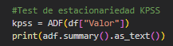
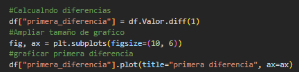

Estacionariedad de Series Temporales
En general, catalogamos una serie temporal como estacionaria cuando sus estadísticos no cambian
con el tiempo. Esto implica que la media, la varianza y la covarianza de la serie temporal no
cambian con el tiempo. En otras palabras, la serie temporal no tiene tendencia ni
estacionalidad. Sin embargo, en la práctica, es difícil encontrar una serie temporal que sea
completamente estacionaria. Por lo tanto, es más común encontrar series temporales que son
estacionarias en promedio, pero que tienen tendencias y estacionalidades en el corto plazo. En
este artículo, veremos como podemos determinar si una serie temporal es estacionaria o no, y
como podemos transformar una serie temporal no estacionaria en una estacionaria.
Iniciemos importando las librerías necesarias para el análisis de la serie temporal y extrayendo
la data desde la base de datos de Yunque Capital (firma en que colaboro actualmente), para mayor
facilidad en cuanto al filtrado y preparación de la data. No obstante, estaré cargando un
archivo .csv en el repositorio con la misma data utilizada. Igual, la información cruda puede
ser encontrada en el sitio web del Banco Central de la República Dominicana en la sección de
Sector Monetario y Financiero. Empecemos extrayendo la data:
Código
Resultado
Este código conecta a la base de datos, crea un query, lo envía, almacena el resultado y se asegura de que la columna "Fecha" tenga el formato adecuado. Como resultado tenemos una serie temporal cuya columna "Valor" se corresponde al IMAE. Grafiquémosla:
Código
Resultado
Código
Resultado
El primer código modifica las dimensiones del gráfico y pasa la información directamente a ser
graficada. Sin embargo, el comportamiento de esta variable podría analizarse mejor si
descomponemos el comportamiento de forma anual. Para esto lo que hace el segundo código es crear
una columna con el año y otra con el mes, y luego graficar el comportamiento de la variable en
cada uno de estos períodos.
Luego de graficar la serie temporal, podemos ver que esta tiene una tendencia
creciente, lo que significa que su media no es constante a lo largo del
tiempo. Además, la serie temporal tiene una estacionalidad anual, lo que significa que su media
cambia con el tiempo. Por lo tanto, a simple vista esta serie no es
estacionaria. Pero ¿Cómo podemos determinar si una serie temporal es estacionaria o no? Para
esto, podemos utilizar el test de Dickey-Fuller. Este consta de una hipótesis nula y una
hipótesis alternativa que se definen de la siguiente manera:
Hipótesis nula (Ho): La serie temporal tiene una raíz unitaria, lo que significa que esta no es estacionaria.
Hipótesis alternativa (Ha): La serie temporal no tiene una raíz unitaria, lo que significa que es estacionaria.
El test de Dickey-Fuller tiene un valor p que nos permite determinar si rechazamos o no la
hipótesis nula. Si el valor p es menor que un umbral predefinido (por ejemplo, 0.05), rechazamos
la hipótesis nula y concluimos que la serie temporal es estacionaria. Si el valor p es mayor que
el umbral predefinido, no podemos rechazar la hipótesis nula y concluimos que la serie temporal
no es estacionaria. A continuación, veamos cómo podemos implementar el test de Dickey-Fuller en
Python de una forma sencilla:
Código
Resultado
Este código nos devuelve el valor p del test de Dickey-Fuller. Como podemos ver, el valor p
(0.984) es mayor que cualquiera de los 3 niveles de significancia que tomemos (0.01, 0.05 y 0.1)
, por lo que no podemos rechazar la hipótesis nula de que la serie temporal tiene una raíz
unitaria. Por lo tanto, podemos concluir que la serie temporal no es estacionaria.
También podríamos trabajar con el test de KPSS, el cual es muy utilizado como complemento del test
de Dickey-Fuller, pues mientras este último se utiliza para probar si una serie de
tiempo tiene una raíz unitaria, el de KPSS se utiliza para probar si la serie es estacionaria
en media y varianza. En general, se utilizan ambos tests en conjunto para obtener una mejor comprensión de la estacionariedad de una serie de
tiempo. A diferencia de Dickey-Fuller en el test KPSS, la hipótesis nula es que la serie
temporal es estacionaria. Si el p-value obtenido en el test es menor que el nivel de
significancia elegido, se rechaza la hipótesis nula y se concluye que la serie no es
estacionaria. Por lo tanto, si el p-value es menor que el nivel de significancia, se interpreta
que la serie no es estacionaria. A continuación, veamos cómo podemos implementar el test de KPSS
en Python de una forma sencilla:
Código
Resultado
Este código nos devuelve el valor p del test de KPSS. Como podemos ver, el Test Estadístico
(2.005) es mayor que cualquier valor crítico que tomemos (0.74, 0.46 y 0.35), por lo que
rechazamos la hipótesis nula de que la serie temporal es estacionaria. Por lo tanto, podemos
concluir que la serie temporal no es estacionaria. Podríamos llegar a la misma conclusión con el
valor p al ver que este es menor que cualquiera de los 3 niveles de significancia que
tomemos (0.01, 0.05 y 0.1).
Si bien es difícil encontrar una variable que sea estacionaria, es importante que sepamos como
podemos determinar si una serie temporal es estacionaria o no. Esto es importante porque muchas
de las técnicas de modelado de series temporales asumen que la serie temporal es estacionaria.
Por lo tanto, si la serie temporal no es estacionaria, es necesario transformarla para que lo sea.
Ahora veamos como podemos transformar una serie temporal no estacionaria para que
sea estacionaria.
Entre los métodos más comunes para transformar una serie temporal no estacionaria en una estacionaria,
se encuentran la diferenciación y la descomposición aditiva (desarrollada
en otro artículo). A continuación, veamos cómo podemos implementar el método de diferenciación
con la ayuda de Python:
Código
Resultado
Viendo como los resultados se comportan en relación al cero sin ninguna tendencia o patrón claro, podríamos decir que la serie temporal es estacionaria. Sin embargo, apliquemos los tests de Dickey-Fuller y KPSS para confirmar nuestra hipótesis:
Código
Resultado
Código
Resultado
Como podemos ver, el valor p del test de Dickey-Fuller (0.000) es menor que cualquier nivel de
significancia que tomemos (0.01, 0.05 y 0.1), por lo que rechazamos la hipótesis nula de que la
serie temporal tiene una raíz unitaria. Por lo tanto, podemos concluir que esta es
estacionaria. También podemos ver que el valor p del test de KPSS (0.861) es mayor que cualquier
nivel de significancia que tomemos, por lo que no podemos rechazar la hipótesis nula de que la
serie temporal es estacionaria. Por lo tanto, podemos concluir nuevamente que esta es estacionaria.
En este artículo, hemos repasado como podemos determinar si una serie temporal es estacionaria o
no. También como podemos transformar una serie temporal no estacionaria en una serie temporal
estacionaria. Al final de la página, se encuentra el código completo de este artículo.
https://github.com/hectordanielc/time-series